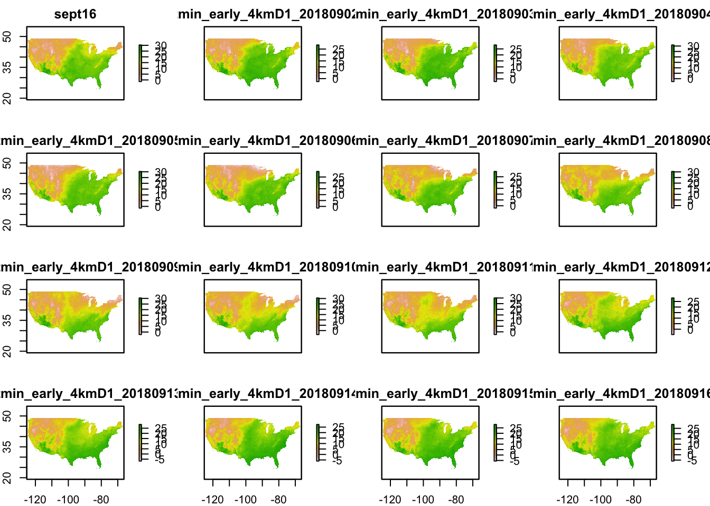
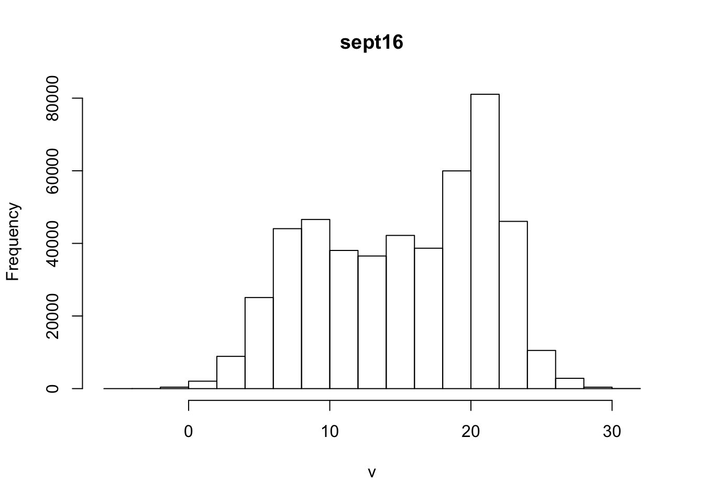
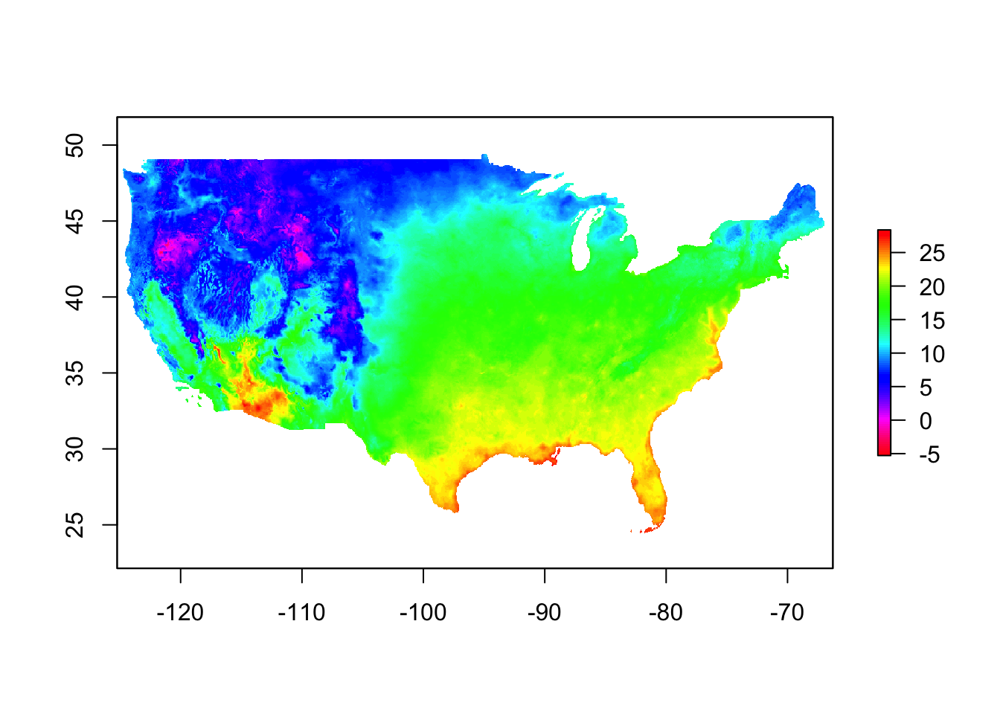
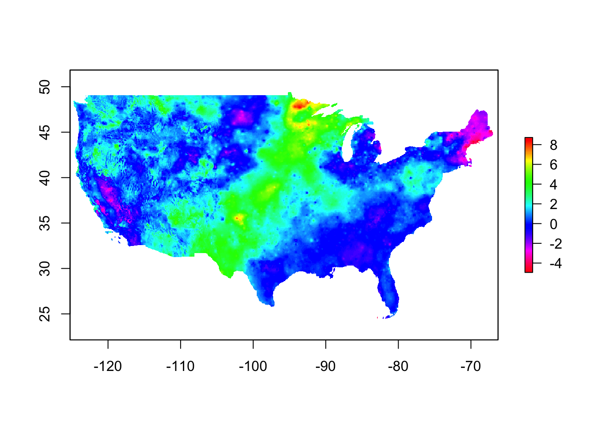
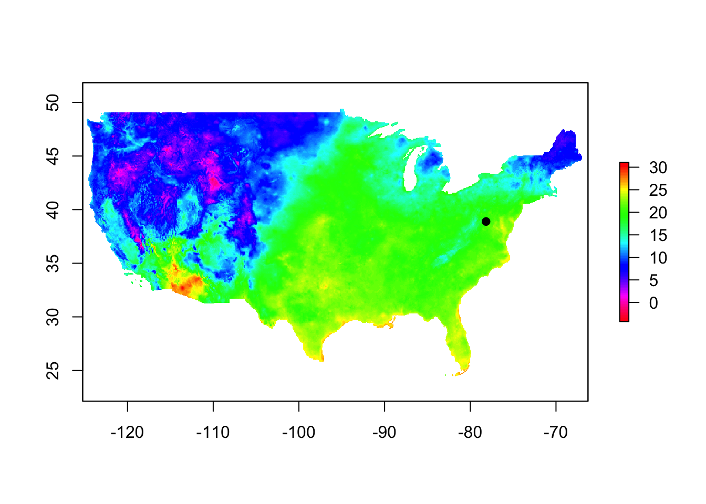
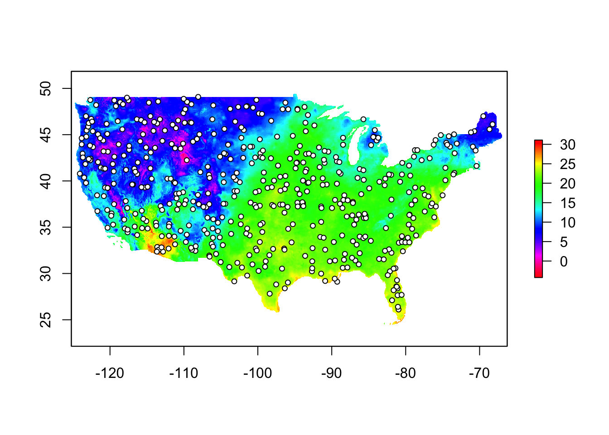

Using R as a GIS:
Brian S. Evans, Ph.D.
Project Description and Context
In this module you will learn how to use R as a geographic information system (GIS). In doing so, we will be exploring 4 km resolution minimum temperature data from the [PRISM climate group] (http://prism.oregonstate.edu/) from the first of September to the present. PRISM provides a continuous grid of modeled temperature and precipitation values across the conterminous United States.
Exercise Objectives
- Become familiar with importing and formatting spatial data
- Learn how to explore your raster data visually and quantitatively
- Learn how to extract raster data to sampling points
- Learn how to export spatial data to Google Earth
Setup
We will start by loading the primary libraries that provide us with the tools for using R as a geographic information system.
library(raster) # Package for working with raster files
library(dismo) # Lots of great tools for distribution modeling
library(gstat)
library(maps) # Provides some predefined map layers
library(rasterVis)
library(prism) # Download and prepare prism temperature dataWe will set some options for this session:
select <-
dplyr::select
options(prism.path = "~/prismtmp")Loading raster files
Download raster files that provides minimum temperature data for the conterminous United States:
get_prism_dailys(
'tmin',
minDate = '2018-09-01',
maxDate = '2018-09-05',
keepZip = FALSE)We can view the files as below:
ls_prism_data(absPath = TRUE)Take a moment to explore how these data are indexed:
ls_prism_data(absPath = TRUE)[1,1]
ls_prism_data(absPath = TRUE)[1,]
ls_prism_data(absPath = TRUE)[,1]Now, let’s create a raster-format object from this file and assign a name. A raster is a continuous matrix of cells (also called pixels), where each defined by its value and position (x and y location). In a geographic raster, the position is georeferenced to a location on Earth by the bounding box of the raster (the extent), resolution (the size of the pixels), and the coordinate reference system (how the pixels are projected onto the Earth’s surface). The function raster reads a raster file into R. The argument of this function is the path to the file.
tmin_20180901 <-
raster(ls_prism_data(absPath = TRUE)[1,2])Let’s take a moment to explore this file:
tmin_20180901## class : RasterLayer
## dimensions : 621, 1405, 872505 (nrow, ncol, ncell)
## resolution : 0.04166667, 0.04166667 (x, y)
## extent : -125.0208, -66.47917, 24.0625, 49.9375 (xmin, xmax, ymin, ymax)
## coord. ref. : +proj=longlat +datum=NAD83 +no_defs +ellps=GRS80 +towgs84=0,0,0
## data source : C:\Users\Guest user\Documents\prismtmp\PRISM_tmin_early_4kmD1_20180901_bil\PRISM_tmin_early_4kmD1_20180901_bil.bil
## names : PRISM_tmin_early_4kmD1_20180901_bil
## values : -5.071, 31.193 (min, max)There are several things that are important to note in this output, for example the resolution provides the size of each raster cells (here shown in degrees), the extent gives the bounding box of the raster, and values prints the range of values of the raster cells. Perhaps the most important output of these summary data is “coord. ref”, which describes the coordinate reference system (CRS) of the raster object. You will notice that the coordinate reference system was already defined for this object (the data are provided as latitude and longitude values with “North American 1983 datum”). This hints at some of what is under the hood when you run the function raster. Please take a moment to explore the raster file in your computer’s file management system.
We might also choose to read in all of our rasters at once and store them as a single object. An object that holds multiple raster layers is known as a “raster stack”. Rasters in a stack are spatially identical. All rasters in a stack have the same spatial extent and resolution – only the values of the cells may differ. Stacks are useful when you want to compare between rasters or run the same function on a set of raster layers (such as loading them into R). Using stacks can help us avoid having to write complex functions or for loops. We can load a raster stack using the stack function:
tminStack <-
stack(ls_prism_data(absPath = TRUE)[,2])
tminStack## class : RasterStack
## dimensions : 621, 1405, 872505, 5 (nrow, ncol, ncell, nlayers)
## resolution : 0.04166667, 0.04166667 (x, y)
## extent : -125.0208, -66.47917, 24.0625, 49.9375 (xmin, xmax, ymin, ymax)
## coord. ref. : +proj=longlat +datum=NAD83 +no_defs +ellps=GRS80 +towgs84=0,0,0
## names : PRISM_tmin_early_4kmD1_20180901_bil, PRISM_tmin_early_4kmD1_20180902_bil, PRISM_tmin_early_4kmD1_20180903_bil, PRISM_tmin_early_4kmD1_20180904_bil, PRISM_tmin_early_4kmD1_20180905_bil
## min values : -5.071, -6.393, -6.716, -5.778, -5.684
## max values : 31.193, 29.157, 29.255, 31.372, 30.654We can call a single raster layer from the stack object in the same way that we would index a list object:
tminStack[[1]]## class : RasterLayer
## dimensions : 621, 1405, 872505 (nrow, ncol, ncell)
## resolution : 0.04166667, 0.04166667 (x, y)
## extent : -125.0208, -66.47917, 24.0625, 49.9375 (xmin, xmax, ymin, ymax)
## coord. ref. : +proj=longlat +datum=NAD83 +no_defs +ellps=GRS80 +towgs84=0,0,0
## data source : C:\Users\Guest user\Documents\prismtmp\PRISM_tmin_early_4kmD1_20180901_bil\PRISM_tmin_early_4kmD1_20180901_bil.bil
## names : PRISM_tmin_early_4kmD1_20180901_bil
## values : -5.071, 31.193 (min, max)tminStack[[1:2]]## class : RasterStack
## dimensions : 621, 1405, 872505, 2 (nrow, ncol, ncell, nlayers)
## resolution : 0.04166667, 0.04166667 (x, y)
## extent : -125.0208, -66.47917, 24.0625, 49.9375 (xmin, xmax, ymin, ymax)
## coord. ref. : +proj=longlat +datum=NAD83 +no_defs +ellps=GRS80 +towgs84=0,0,0
## names : PRISM_tmin_early_4kmD1_20180901_bil, PRISM_tmin_early_4kmD1_20180902_bil
## min values : -5.071, -6.393
## max values : 31.193, 29.157We can name raster layers in the same way that we name objects in a list or data frame:
names(tminStack[[1]]) <-
'sept1'If we are only interested in one raster object, we can assign a name based on the location of the object within the raster stack:
tmin_sept1 <-
tminStack[[1]]Coordinate reference systems and transformation
The projection information for a raster is so important that it deserves it’s own section. As mentioned above, the coordinate reference system provides the geodetic datum (i.e., the point of reference for which locations are measured – Google Earth is WGS 1984) and the type of coordinates used (e.g., latitude, longitude or UTM). There is a bit more to the CRS, but that’s enough to get us started (Note: We have placed an excellent guide to CRS, published by the National Center for Ecological Analysis and Synthesis, in your Dropbox folder). When we typed the name of the raster and raster stack above the CRS was printed in the output. We can also explicitly query the CRS information using the functions crs or projection.
crs(tminStack)## CRS arguments:
## +proj=longlat +datum=NAD83 +no_defs +ellps=GRS80 +towgs84=0,0,0projection(tminStack)## [1] "+proj=longlat +datum=NAD83 +no_defs +ellps=GRS80 +towgs84=0,0,0"The CRS is important because when comparing between objects, such as raster values at the locations of points that you have recorded with a GPS unit, you need to ensure that both datasets are using the same CRS. If you do not do so, the alignment of objects can be quite different. If this occurs, you might see strange results when making maps or, even worse, extract the wrong data to points (we will cover point extraction below). To ensure that this does not occur, you can transform a raster to a new coordinate system using the function projectRaster. Later in this lab we will be projecting our files onto Google Earth, which uses a different CRS than our raster objects (WGS84, which really almost identical, but not quite). Let’s transform our raster stack with the following code:
newProj <-
'+proj=longlat +ellps=WGS84 +datum=WGS84'
tminStack_prj <-
projectRaster(tminStack, crs = newProj)
projection(tminStack)## [1] "+proj=longlat +datum=NAD83 +no_defs +ellps=GRS80 +towgs84=0,0,0"projection(tminStack_prj)## [1] "+proj=longlat +ellps=WGS84 +datum=WGS84 +towgs84=0,0,0"Exercise 1:
Transform the raster file tmin_sept1 to the CRS defined in newproj. Assign the name tmin_sept1_prj to the file.
Plotting rasters.
We can plot the entire stack at once in a single diagram using:
plot(tminStack_prj)
We can index the raster stack (double brackets) to plot a single raster.
plot(tminStack_prj[[1]])You can also add state boundaries to a map. For example, let’s add US state boundaries to the 14 September map you made above:
map('state')
plot(tminStack_prj[[1]])
map('state', add = T)
We can also change the color scheme:
plot(
tmin_sept1_prj,
col = rev(rainbow(100)))
map('state', add = T)Or add the state boundaries layer to the above in one step:
plot(
tmin_sept1_prj,
col = rev(rainbow(100)),
addfun = map('state', add=T))
Plots can be useful for exploring raster objects. For example, we can determine the value at a given point using the click function (Note: Hit ‘Escape’ to exit turn off the clicker):
click(tmin_sept1_prj)If you do not provide the name of the raster, click() will return the location of the cell you click on (also useful information!).
click()Cropping rasters
We can zoom into the map by clicking the upper left and lower right hand corner of a bounding box:
zoom(
tmin_sept1_prj,
col = rev(rainbow(100)))To create a raster for a reduced extent, draw a new extent around Virginia by clicking the upper left and lower right hand corner of a bounding box that contains the state boundaries:
extentVirginia <-
drawExtent()Crop the raster to the new extent and assign the name tminVirginia:
tminVirginia <-
crop(tmin_sept1_prj, extentVirginia)Plot the new reduced raster:
plot(
tminVirginia,
col = rev(rainbow(100)),
addfun = map('state', add=T))
Exercise 2:
- Assign the name “tmin14Sept” to the raster file that represents the minimum temperatures for the 14th of September, 2018.
- Plot the minimum temperatures for 14, September, 2018.
- Change the color scheme to
rainbow.
- Add the state boundaries to your plot.
Raster summary data and math
An advantage to using R for working with rasters is that it is super simple to explore summary statistics and calculate new rasters using math.
Let’s start by looking again at the summary information for the raster layer that we created:
tmin_sept1_prj## class : RasterLayer
## dimensions : 631, 1414, 892234 (nrow, ncol, ncell)
## resolution : 0.0417, 0.0417 (x, y)
## extent : -125.2293, -66.26553, 23.8333, 50.146 (xmin, xmax, ymin, ymax)
## coord. ref. : +proj=longlat +ellps=WGS84 +datum=WGS84 +towgs84=0,0,0
## data source : in memory
## names : sept1
## values : -4.352329, 31.0922 (min, max)We can calculate descriptive statistics using the cellstats function:
cellStats(tmin_sept1_prj, 'mean')## [1] 15.14463cellStats(tmin_sept1_prj, 'min')## [1] -4.352329cellStats(tmin_sept1_prj, 'max')## [1] 31.0922cellStats(tmin_sept1_prj, 'sd')## [1] 6.084061How are the temperature data distributed? Let’s plot a histogram:
hist(tmin_sept1_prj)
Note the warning message we received! We can change the argument maxpixels to include all of the pixels, though this will lead to a longer calculation time:
hist(tmin_sept1_prj, maxpixels = Inf)
There are many arguments that can be used when plotting histograms of rasters. Type ?hist to learn more. Below is the code for a more advanced histogram:
hist(
tmin_sept1_prj,
maxpixels = Inf,
freq = F,
xlab = expression('Temperature (' * degree * C * ')'),
xlim = c(0, 32),
ylim = c(0, .12),
cex.lab = 1.5,
cex.main = 1.5,
col = rev(rainbow(19))
)We can also perform calculations on a cell-by-cell basis. For example, we can create a raster in which each cell represents the average of values at that location across the entire cell stack simply by using the mean function.
mean(tminStack_prj)## class : RasterLayer
## dimensions : 631, 1414, 892234 (nrow, ncol, ncell)
## resolution : 0.0417, 0.0417 (x, y)
## extent : -125.2293, -66.26553, 23.8333, 50.146 (xmin, xmax, ymin, ymax)
## coord. ref. : +proj=longlat +ellps=WGS84 +datum=WGS84 +towgs84=0,0,0
## data source : in memory
## names : layer
## values : -5.099613, 28.56446 (min, max)Let’s view the raster object that this function creates:
plot(
mean(tminStack_prj),
col = rev(rainbow(100)))
We can also do more complex mathematical operations on a cell-by-cell basis. For example, perhaps we were interested in the deviation of the values on a given day relative to the mean of a period. Let’s first look at how this would work with a vector object:
v <- c(3, 5, 8)
mean(v)## [1] 5.333333v[1] - mean(v)## [1] -2.333333Doing this operation with a raster works in exactly the same way. To determine how the temperature on the first day of a stack compares to the average across days, we would write:
tminStack_prj[[1]] - mean(tminStack_prj)## class : RasterLayer
## dimensions : 631, 1414, 892234 (nrow, ncol, ncell)
## resolution : 0.0417, 0.0417 (x, y)
## extent : -125.2293, -66.26553, 23.8333, 50.146 (xmin, xmax, ymin, ymax)
## coord. ref. : +proj=longlat +ellps=WGS84 +datum=WGS84 +towgs84=0,0,0
## data source : in memory
## names : layer
## values : -8.218798, 8.523455 (min, max)This can be plotted as:
plot(
tminStack_prj[[1]] - mean(tminStack_prj),
col = rev(rainbow(100)))
Exercise 3:
In the above plot, it looks as though temperatures in the Eastern United States were slightly below the daily average, while temperatures in the Western United States were slightly higher than the average for the period. Determine whether overall temperatures in the conterminous United States (i.e., across raster cells) were higher or lower on September 1 than the average for the period. Note: There are several ways to do this using the tools addressed above!
Working with point data
Spatial points are defined by their longitude and latitude (or x and y location). Our banding station is located at the following coordinates (a vector of longitude and latitude):
bandingLL <-
data.frame(
x = -78.1621,
y = 38.8926)We can convert the latitude and longitude data to a spatial points object:
bandingPt <-
SpatialPoints(
coordinates(bandingLL))
bandingPt## class : SpatialPoints
## features : 1
## extent : -78.1621, -78.1621, 38.8926, 38.8926 (xmin, xmax, ymin, ymax)
## coord. ref. : NAWe need to set the projection of the points object, using the crs function to copy the coordinate system of the temperature raster:
crs(bandingPt) <-
newProj
bandingPt## class : SpatialPoints
## features : 1
## extent : -78.1621, -78.1621, 38.8926, 38.8926 (xmin, xmax, ymin, ymax)
## coord. ref. : +proj=longlat +ellps=WGS84 +datum=WGS84 +towgs84=0,0,0We can complete the above using one step. If we do not have to use the data frame “bandingLL” again, this would be the preferred method (why?):
bandingPt <-
data.frame(
x = -78.1621,
y = 38.8926) %>%
coordinates %>%
SpatialPoints(proj4string = CRS(newProj))Remember that it is absolutely crucial that all data layers are in the same projection. If this is not the case, the function spTransform is used to transform points and shape files to a new projection. For example:
spTransform(bandingPt, newProj)Once we have created a point and are certain that it is in the correct CRS, we can add our banding station location to a map (here using tmin_sept1):
plot(
tmin_sept1_prj,
col = rev(rainbow(100)))
points(bandingPt)If you’re having a hard time seeing it, you can use the argument pch to change the type of point displayed. Let’s use pch = 19 and see what the new point object looks like:
plot(
tmin_sept1_prj,
col = rev(rainbow(100)))
points(
bandingPt,
pch = 19)
Still a little hard to see? Let’s use the col argument to change the color of the point:
plot(
tmin_sept1_prj,
col = rev(rainbow(100)))
points(bandingPt,
pch = 19,
col = 'white')To make our points even easier to see might want to surround our points with a border (pch = 21) and give them a background color (bg = 'white'):
plot(
tmin_sept1_prj,
col = rev(rainbow(100)))
points(bandingPt,
pch = 21,
bg = 'white')See ?par for all of the different parameters that can be set with graphic objects.
Extracting values to points
We can easily extract raster values to points using the extract function. For example, to extract the minimum temperature at our banding station on 14 September, we would write:
extract(tmin_sept1_prj,
bandingPt)Uh-oh. It doesn’t work! This is because there are multiple R packages that include the function extract. You can tell R which package you would like to use by giving the name of the package, in this case raster, followed by “::” and the name of the function.
raster::extract(tmin_sept1_prj,
bandingPt)##
## 20.43724We can use the function and the stack object above to see the minimum temperature at our banding station since the first of September:
raster::extract(tminStack_prj,
bandingPt)## sept1 PRISM_tmin_early_4kmD1_20180902_bil
## [1,] 20.43724 18.91267
## PRISM_tmin_early_4kmD1_20180903_bil
## [1,] 19.72301
## PRISM_tmin_early_4kmD1_20180904_bil
## [1,] 20.50141
## PRISM_tmin_early_4kmD1_20180905_bil
## [1,] 21.19654You can also extract the values of a raster within a given radius around a given point (or multiple points). Let’s look at the average minimum temperature within 10 km of the banding point:
raster::extract(tmin_sept1_prj,
bandingPt,
buffer = 10000,
fun = mean,
na.rm = T)## [1] 20.5196It is often necessary to save point values to your point object. Let’s run the following code with the argument sp=T to attach values to our banding point:
bandingPt_spDf <-
raster::extract(
tmin_sept1_prj,
bandingPt,
sp = T)
bandingPt_spDf## class : SpatialPointsDataFrame
## features : 1
## extent : -78.1621, -78.1621, 38.8926, 38.8926 (xmin, xmax, ymin, ymax)
## coord. ref. : +proj=longlat +ellps=WGS84 +datum=WGS84 +towgs84=0,0,0
## variables : 1
## names : sept1
## value : 20.4372380742669The object you created above is called a spatial points data frame. This is a spatial points object in which there is a data frame containing the values for each point location. You can view just the data frame using the @data argument, as below:
bandingPt_spDf@data## sept1
## 1 20.43724Generating and extracting values to random points.
In R, it is quite easy to generate random points within a raster:
# Generate points:
rPoints <-
randomPoints(tmin_sept1_prj, 500)
# Make points spatial:
rPoints_sp <-
SpatialPoints(rPoints)
# Project points:
crs(rPoints_sp) <-
crs(tmin_sept1_prj)Let’s add the random points to the map:
plot(
tmin_sept1_prj,
col = rev(rainbow(100)))
points(
rPoints_sp,
pch = 21,
cex = .75,
col = 1,
bg = 'white')
Just as we extracted to individual points, we can extract temperatures for each point:
tmin_rPoints <-
raster::extract(
tmin_sept1_prj,
rPoints_sp,
sp = T)Let’s view the minimum temperature records as a tibble:
tmin_rPoints@data %>%
as_tibble## # A tibble: 500 x 1
## sept1
## * <dbl>
## 1 25.1
## 2 6.17
## 3 21.9
## 4 20.6
## 5 4.05
## 6 18.9
## 7 20.2
## 8 3.45
## 9 17.9
## 10 9.97
## # ... with 490 more rowsA great thing about working with raster stacks is that you can extract values across the entire stack. Let’s extract the values of each of the layers in the raster stack tminStack_prj to the random points we created and view the data frame as a tibble.
raster::extract(
tminStack_prj,
rPoints_sp,
sp = T)@data %>%
as_tibble## # A tibble: 500 x 5
## sept1 PRISM_tmin_early_4km~ PRISM_tmin_early_4km~ PRISM_tmin_early_4km~
## * <dbl> <dbl> <dbl> <dbl>
## 1 25.1 24.6 24.8 25.1
## 2 6.17 3.99 3.69 3.52
## 3 21.9 19.3 19.1 18.6
## 4 20.6 20.5 21.3 21.6
## 5 4.05 4.35 6.09 7.36
## 6 18.9 18.4 18.0 18.8
## 7 20.2 21.7 21.6 21.9
## 8 3.45 5.23 7.41 7.83
## 9 17.9 18.2 18.7 20.0
## 10 9.97 11.1 10.6 11.6
## # ... with 490 more rows, and 1 more variable:
## # PRISM_tmin_early_4kmD1_20180905_bil <dbl>Nothings perfect, what’s wrong with the object we created above (think about the rules of data science we have covered)?
Exercise 3:
- Generate 300 spatial points within the raster tminVirginia. Assign the name “rPoints” to the object.
- Convert to a spatial object and assign the name “rPointsSp” to the object.
- Extract values of tminVirginia to rPointsSp (Note: Use
sp = T) and convert the output to a tibble. Assign the name “rPointsV” to the resultant object.
- Use the functions
class,str,names,head, andsummaryto explore the structure and values of rPointsV.
Viewing and sharing your files interactively! Say no to cartography!
There are lots of ways to explore maps interactively, one way that’s fun is to share maps via Google Earth:
KML(tminVirginia, 'tminVirginia.kml', col = rev(rainbow(100)), colNA=NA)Open up Google Earth and add your data and take a look! To do so, navigate to, and double-click on your KML file in your file explorer.
The above is, of course, just a few basic GIS tasks and really represents the tip-of-the-iceburg of what R can do as a GIS. We will be exploring spatial data much further in labs throughout the week. For a further look at using R as a GIS, check out this website to see the variety of packages and analyses available.